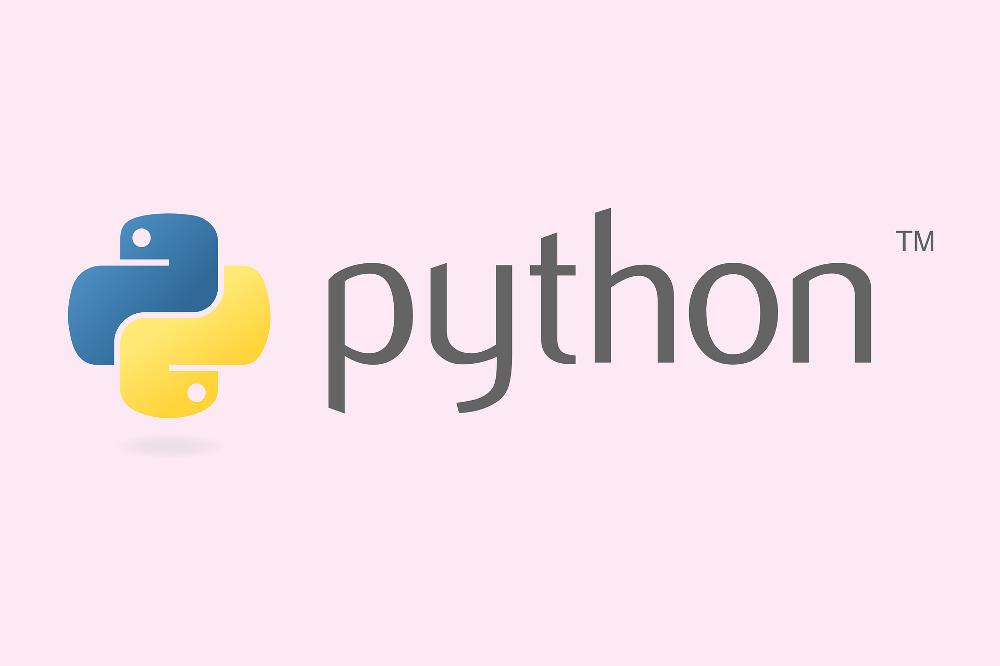
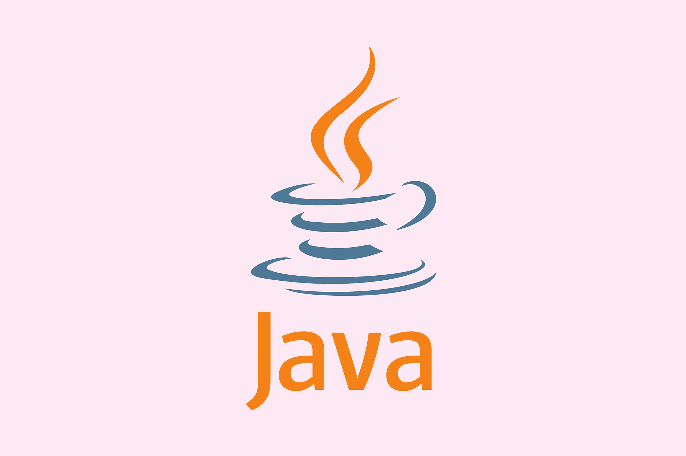
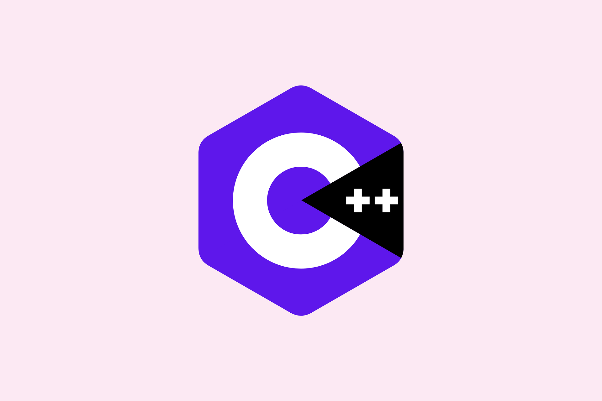

Python
- Object Oriented
- Imperative
- Functional
- Reflexive
Programming paradigms:
History
Python was conceived in the late 1980s by Guido van Rossum at
Centrum Wiskunde & Informatica (CWI) in the Netherlands as a successor
to ABC programming language, which was inspired by SETL, capable of
exception handling and interfacing with the Amoeba operating system.
Its implementation began in December 1989. Van Rossum shouldered
sole responsibility for the project, as the lead developer, until 12 July 2018,
when he announced his "permanent vacation" from his responsibilities as
Python's Benevolent Dictator For Life, a title the Python community
bestowed upon him to reflect his long-term commitment as the project's
chief decision-maker. In January 2019, active Python core developers
elected a 5-member "Steering Council" to lead the project. As of 2021,
the current members of this council are Barry Warsaw, Brett Cannon, Carol
Willing, Thomas Wouters, and Pablo Galindo Salgado.
Python 2.0 was released on 16 October 2000, with many major new
features, including a cycle-detecting garbage collector and support for
Unicode.
Python 3.0 was released on 3 December 2008. It was a major revision of the language that is not
completely backward-compatible. Many of its major features were backported to Python 2.6.x
and 2.7.x version series. Releases of Python 3 include the 2to3 utility, which automates (at least
partially) the translation of Python 2 code to Python 3.
Python 2.7's end-of-life date was initially set at 2015 then postponed to 2020 out of concern that a
large body of existing code could not easily be forward-ported to Python 3. No more security
patches or other improvements will be released for it. With Python 2's end-of-life, only
Python 3.6.x and later are supported.
Python 3.9.2 and 3.8.8 were expedited as all versions of Python (including 2.7) had security
issues, leading to possible remote code execution and web cache poisoning.
Java
- Object Oriented
- Imperative
Programming paradigms:
History
James Gosling, Mike Sheridan, and Patrick Naughton initiated the Java language
project in June 1991. Java was originally designed for interactive television,
but it was too advanced for the digital cable television industry at the time.
The language was initially called Oak after an oak tree that stood outside
Gosling's office. Later the project went by the name Green and was finally
renamed Java, from Java coffee, a type of coffee from Indonesia. Gosling
designed Java with a C/C++-style syntax that system and application
programmers would find familiar.
Sun Microsystems released the first public implementation as Java 1.0 in
1996. It promised Write Once, Run Anywhere (WORA) functionality,
providing no-cost run-times on popular platforms. Fairly secure and featuring
configurable security, it allowed network- and file-access restrictions. Major web
browsers soon incorporated the ability to run Java applets within web pages, and
Java quickly became popular. The Java 1.0 compiler was rewritten in Java by Arthur van Hoff to comply strictly with the
Java 1.0 language specification. With the advent of Java 2
(released initially as J2SE 1.2 in December 1998 – 1999), new
versions had multiple configurations built for different types of
platforms. J2EE included technologies and APIs for enterprise
applications typically run in server environments, while J2ME
featured APIs optimized for mobile applications. The desktop
version was renamed J2SE. In 2006, for marketing purposes, Sun
renamed new J2 versions as Java EE, Java ME, and Java SE,
respectively.
In 1997, Sun Microsystems approached the ISO/IEC JTC 1
standards body and later the Ecma International to formalize
Java, but it soon withdrew from the process. Java
remains a de facto standard, controlled through the Java
Community Process. At one time, Sun made most of its Java
implementations available without charge, despite their
proprietary software status. Sun generated revenue from Java
through the selling of licenses for specialized products such as the
Java Enterprise System.
On November 13, 2006, Sun released much of its Java virtual
machine (JVM) as free and open-source software (FOSS), under
the terms of the GPL-2.0-only license. On May 8, 2007, Sun
finished the process, making all of its JVM's core code available
under free software/open-source distribution terms, aside from a
small portion of code to which Sun did not hold the copyright.
Sun's vice-president Rich Green said that Sun's ideal role with regard to Java was as an evangelist.
Following Oracle Corporation's acquisition of Sun Microsystems in 2009–10, Oracle has described
itself as the steward of Java technology with a relentless commitment to fostering a community of
participation and transparency. This did not prevent Oracle from filing a lawsuit against Google
shortly after that for using Java inside the Android SDK (see the Android section).
On April 2, 2010, James Gosling resigned from Oracle.
In January 2016, Oracle announced that Java run-time environments based on JDK 9 will
discontinue the browser plugin.
Java software runs on everything from laptops to data centers, game consoles to scientific
supercomputers.
C/C++
- Object Oriented
- Imperative
- Structured
Programming paradigms:
History
In 1979, Bjarne Stroustrup, a Danish computer scientist, began work on "C with Classes", the
predecessor to C++. The motivation for creating a new language originated from Stroustrup's
experience in programming for his PhD thesis. Stroustrup found that Simula had features that were
very helpful for large software development, but the language was too slow for practical use, while
BCPL was fast but too low-level to be suitable for large software development. When Stroustrup
started working in AT&T Bell Labs, he had the problem of analyzing the UNIX kernel with respect to
distributed computing. Remembering his PhD experience, Stroustrup set out to enhance the C
language with Simula-like features. C was chosen because it was general-purpose, fast, portable
and widely used. As well as C and Simula's influences, other languages also influenced this new
language, including ALGOL 68, Ada, CLU and ML.
Initially, Stroustrup's "C with Classes" added features to the C
compiler, including classes, derived classes, strong typing,inlining and default arguments.
In 1982, Stroustrup started to develop a successor to C with Classes, which he named
"C++" (++ being the increment operator in C) after going through several other names. New features
were added, including virtual functions, function name and
operator overloading, references, constants, type-safe free-store
memory allocation (new/delete), improved type checking, and
BCPL style single-line comments with two forward slashes (//).
Furthermore, Stroustrup developed a new, standalone compiler
for C++, Cfront.
In 1984, Stroustrup implemented the first stream input/output library. The idea of providing an
output operator rather than a named output function was suggested by Doug McIlroy (who had
previously suggested Unix pipes).
In 1985, the first edition of The C++ Programming Language was released, which became the
definitive reference for the language, as there was not yet an official standard. The first commercial
implementation of C++ was released in October of the same year.
In 1989, C++ 2.0 was released, followed by the updated second edition of The C++ Programming
Language in 1991. New features in 2.0 included multiple inheritance, abstract classes, static
member functions, const member functions, and protected members. In 1990, The Annotated C++
Reference Manual was published. This work became the basis for the future standard. Later feature
additions included templates, exceptions, namespaces, new casts, and a Boolean type.
In 1998, C++98 was released, standardizing the language, and a minor update (C++03) was released
in 2003.
After C++98, C++ evolved relatively slowly until, in 2011, the C++11 standard was released, adding
numerous new features, enlarging the standard library further, and providing more facilities to C++
programmers. After a minor C++14 update released in December 2014, various new additions were
introduced in C++17. After becoming finalized in February 2020, a draft of the C++20 standard
was approved on 4 September 2020 and officially published on 15 December 2020.
On January 3, 2018, Stroustrup was announced as the 2018 winner of the Charles Stark Draper Prize
for Engineering, "for conceptualizing and developing the C++ programming language".
As of 2021 C++ ranked fourth on the TIOBE index, a measure of the popularity of programming
languages, after C, Java, and Python.